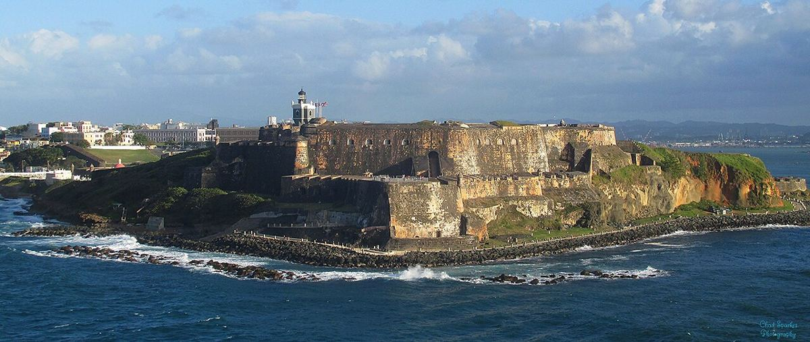
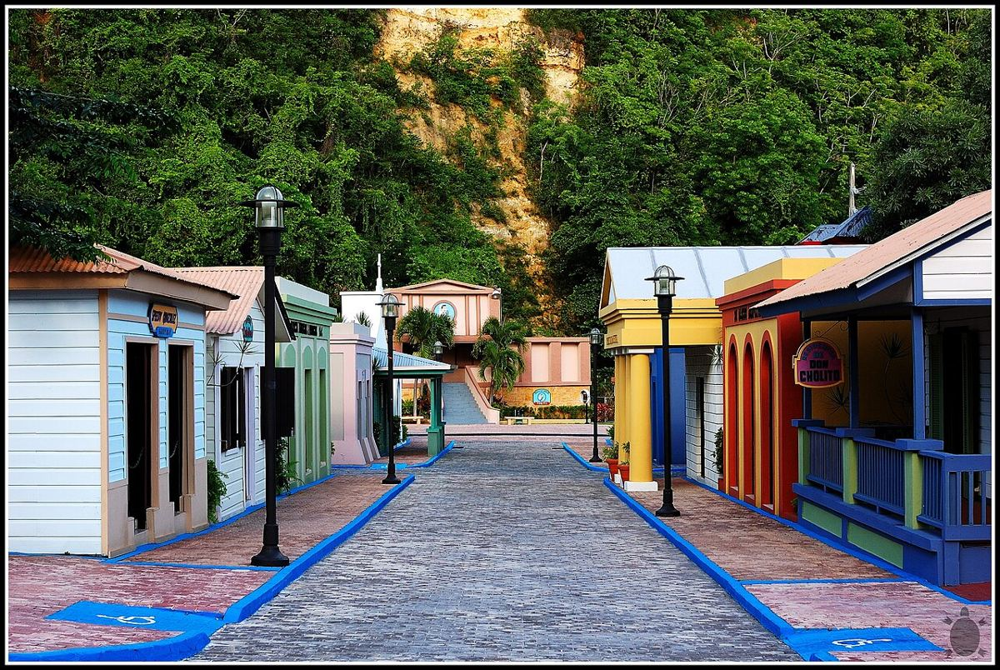
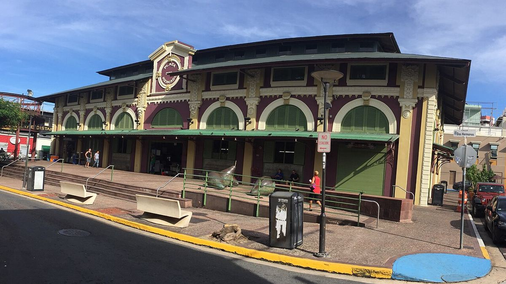
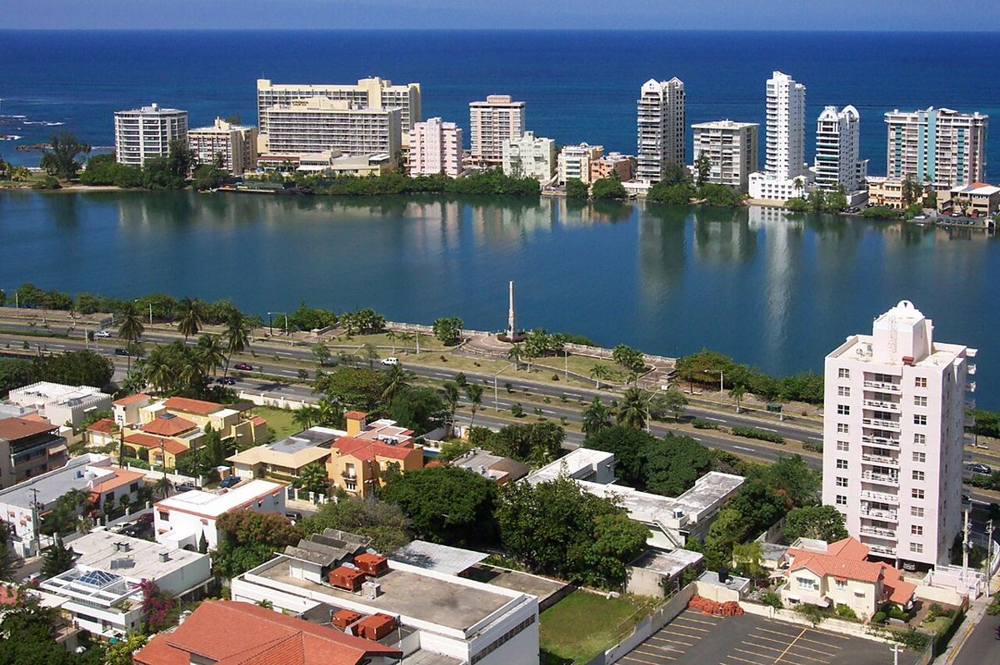
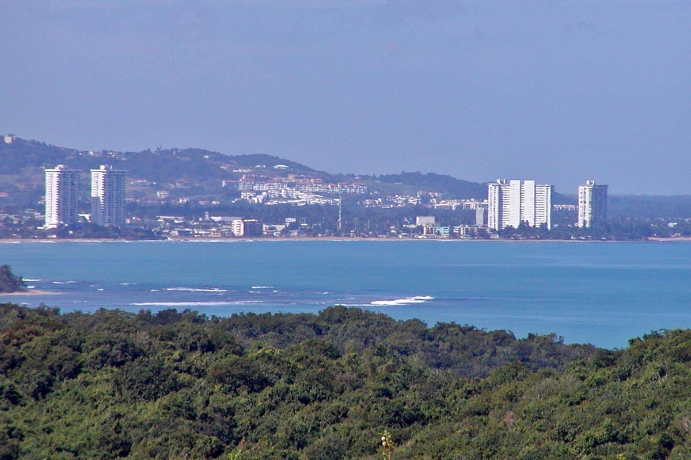
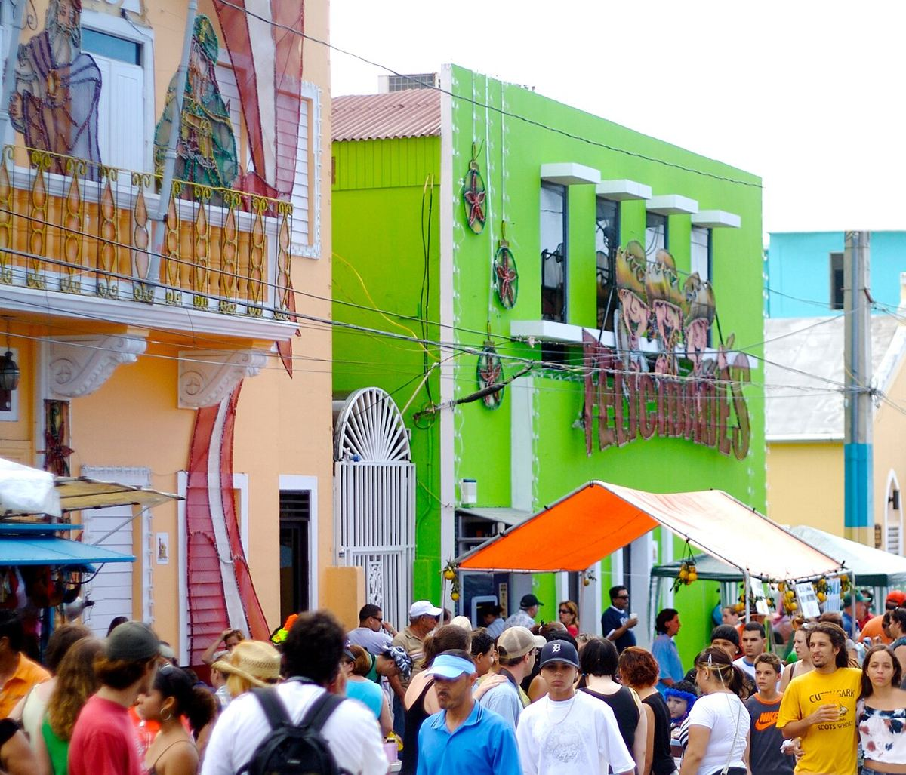

5 bases, nenhuma a mais de 45 min dos passeios do dia.
Todo dia em casa, quarto escuro. Mudanças de base nesse horário: a bebê dorme no carro.
de caminhada obrigatória por dia. Escadas e trilhas longas são sempre opcionais.
Lua cheia em 23/12, nova em 7/1. Baías bioluminescentes em 30/12 e 3/1, de barco. calendário

Paseo de la Princesa, Calle Fortaleza e a praça da Catedral acesas até Reis. Noites de 19/12 e 23/12 no roteiro.

Show de luzes com 42 mil LEDs em Bayamón, 25 min de San Juan. Noite de 21/12, antes da bebê chegar.

Mercado que vira festa de rua à noite, com salsa ao vivo. Noite de 20/12 (sem bebê).

Fogos à meia-noite na Lagoa do Condado e no Centro de Convenções, a pé do apartamento. Jantar cedo, vovó e bebê voltam quando quiserem.

Ceia de 24/12 em casa, em Luquillo, com lechón encomendado numa lechonera. Dia 25 é praia (Seven Seas), porque parques fecham.

Partida em 5/1, véspera do Día de Reyes: as crianças colocam capim debaixo da cama para os camelos. Festa de rua em Hatillo no dia 28/12 no caminho para o oeste.
Toque numa data. Cores da barrinha = base. Selos: leve moderado opcional bio bay
As setas numeradas são o percurso de carro, na ordem da viagem: linha cheia é mudança de base, tracejada é bate-volta. Culebra e Vieques são de ferry a partir de Ceiba: a van fica no estacionamento do terminal. Clique num número, num trecho da lista ou num destino; o carrinho vai até lá e a programação aparece.
Clique num trecho: ele acende no mapa, o carrinho vai até o destino e a programação do dia aparece.
Cada tarefa tem um responsável, um prazo e os links para resolver. Marque a caixinha quando terminar: fica salvo para todo mundo que abrir a página.
Casa de 3 quartos resolve melhor a soneca e a ceia; os hotéis até ~US$ 100 são por quarto de casal (3 quartos para o grupo). Nas festas tudo sobe 20 a 40 %, então confira o preço nas datas.
Preferência por guias locais certificados em grupos pequenos, ou passeios que dispensam guia. Preços por pessoa.
Rasas, sem onda, com sombra: Escambrón, La Monserrate (Luquillo), Seven Seas, Flamenco, Boquerón, Playa Santa, Caracas e Sun Bay (Vieques).
Tenda UV, chapéu, protetor; sol de meio-dia queima em 15 min.
Caiaque nas baías (por isso barco), catamarãs de 6 h, Toro Verde, trilha La Mina, desfile das 14h em Hatillo. Cada um tem alternativa no roteiro.
Sling (pedras da Velha San Juan), cadeirinha própria (viaja grátis), repelente (mangue e noites de bio bay), sapatilhas de água, farmácia básica (Walgreens/CVS em todo lugar).
Estação seca: 26–29 °C, pancadas curtas em El Yunque. Mar do norte pode ter ondulação; o sul (Boquerón, Guánica, Vieques) fica calmo.